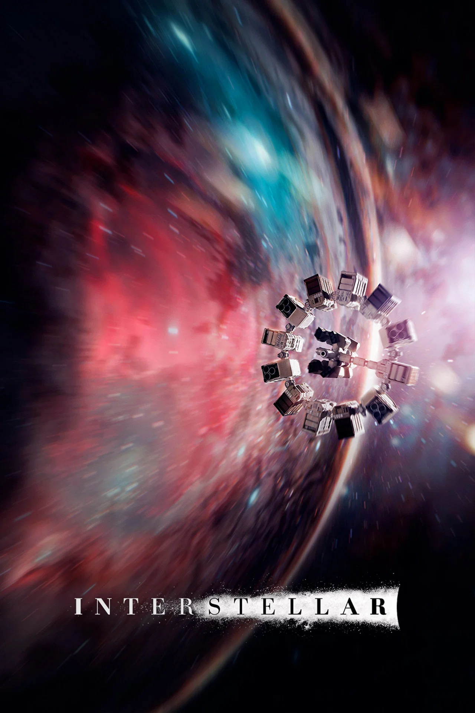

MVP-Savyn
MVP-Savyn
Savin-cinema-rpc
El script de Rich Presence definitivo para MPV. Sincroniza tus reproducciones con carátulas oficiales de TMDb de forma automatizada y con diseño modular impecable.
Galería de Demostración
Previsualización Interactiva Completa
Modos de Visualización
Alterna entre las opciones estructurales avanzadas del mod. La barra de progreso integrada reproduce fielmente el diseño de las líneas de tiempo de actividad multimedia de Discord:

🧼 Regex Inteligente
Purga de forma automatizada etiquetas molestas de ripeo o servidores remotos (1080p, x265, Bluray, dual) para búsquedas perfectas.
🌐 Fallback Bilingüe
Consulta inteligentemente en Español e Inglés en TMDb. Si falta información en un idioma, se complementa al instante.
🍏 Multiplataforma Real
Mismo rendimiento optimizado y asistentes automatizados integrados para entornos Linux, macOS y Windows.